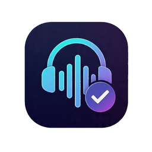

Download a release
Grab the latest binary from the Releases page for your platform.

A modern, fast, and lightweight audio device switcher for Linux. Switch between audio sinks and sources instantly with a clean GUI.
Everything you need to manage your audio devices efficiently.
No "Apply" button needed. Selecting a device immediately changes the default and moves active audio streams.
List paired devices, toggle Bluetooth power, and auto-connect on selection via bluetoothctl.
Use the same device for both input and output with a single toggle.
Remembers last devices, window position, Bluetooth state, and exclusion list across sessions.
Auto-detects system locale. Supports English, Portuguese, Spanish, French, German, and Italian.
Exclude unwanted devices, hide unknown Bluetooth MAC addresses, and search debug logs.
Shows cached devices immediately on startup while a background scan refreshes the list in real time.
GTK-based tray icon with Quit and click-to-restore. Close button hides to tray instead of exiting.
Get up and running in minutes.
Grab the latest binary from the Releases page for your platform.
Run with the -install flag to copy the binary, install the icon, and set up autostart:
./audio-selector -install
Requires Rust 1.80+:
git clone https://github.com/evandrojr/audio-selector.git cd audio-selector cargo run --release
Built with modern tools for performance and reliability.